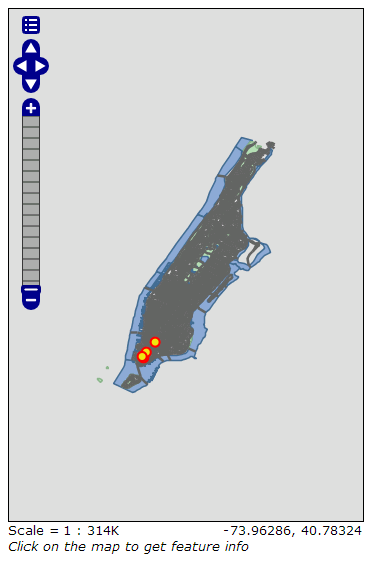

GeoServer Quickstart¶
GeoServer is a java application for serving maps (and data) for other clients to draw.
This Quick Start describes how to:
- add a vector and raster data source to GeoServer
- apply color to map features using styling
- test the layers in a simple web map
- learn about clients that can display your maps
- add a layer from a NetCDF file
Contents
Start GeoServer¶
- Select the in the menu.
- The application will take a few moments to start up and will open a web page at http://localhost:8082/geoserver/web

First Views¶
When you first open the GeoServer page you will see the screen above, first you need to log in using the username admin and password geoserver. You will now see the admin page.

Select the Layer Preview link at the top of the Data section in the left hand menu to see a preview of the layers that are loaded on the server.

Scroll to the bottom of the page and click on the OpenLayers link in the tiger-ny row, this will open a new window with a preview of some of the sample data.
You can zoom in to the map in three ways:
- by clicking on the zoom bar on the left, the higher you click on it the more zoomed in you will see.
- by using the mouse scroll wheel (if you have one), scrolling up will zoom in and down will zoom out.
- by dragging a box on the map while holding down the
shift key- this will zoom in to the box selected (or as near as will fit in the screen).
Experiment with this view and look at some of the other previews. Once you are comfortable viewing existing data you can move on to adding some new data.
Loading Data¶
Note
You will not be able to carry out the following steps if you are running with a read only file system (such as the DVD). You will either need to run in a Virtual Machine, or from a USB, or install OSGeo-Live (or just GeoServer) onto your hard drive.
In this example we are going to use the Natural Earth data set
that is included on OSGeo-Live (/usr/local/share/data/natural_earth2/).
We need to create a Store for our data. From the GeoServer admin page go to Stores and then click on Add new Store. You will see this page:

Select the Directory of spatial files, you will see the following:

Type in a name for the Data Store - I used Natural Earth and fill in
the URL to the data set - in this case /usr/local/share/data/natural_earth2/.
You can use the browse button to find the directory if your data is somewhere else. Press save.

Press publish next to one of the layers to finish up adding the data. This will take you to the Layers page:

As you scroll down the page you will see that GeoServer has filled in many of the fields for you. When you reach Coordinate Reference System you will notice that under Native SRS that it says UNKNOWN you will need to fill in the next box (declared SRS) to make sure GeoServer knows where the data is. For the time being trust me and type epsg:4326 in the box, if you don’t trust me then go to http://prj2epsg.org/search and paste in the string you see if you click on the link next to “UNKNOWN”. Then click on Compute from data and Compute from native bounds to fill in the Bounding Boxes. Finally hit save and you have published your first layer.
Note
Don’t worry if the layer preview doesn’t look very good as it is using the default style. In the next section we will look at producing a nicer style.
You can follow the same step with the other layers in the directory by using the Add a new resource button on the layers page. Just select the natural earth store from the drop down box to get back to the store’s page.
Styling¶
To style a data set into a map layer GeoServer uses an OGC standard called Styled Layer Descriptors (SLD). These are represented as XML files which describe the rules that are used to apply various symbolizers to the data.
To get started I styled the Land and Ocean datasets. You can create SLD files using a simple text editor, but sometimes a graphical editor is better. There are several options here but I like to use uDig as it allows me to open the shapefiles directly and apply simple styles using a GUI, but also provides a simple editor to modify the XML if I need to.
Using uDig to create simple styles¶
Note
For more details on how to use uDig see the uDig Quickstart
Once I opened uDig up and added the shapefiles (using the add data button in the top left hand corner). I dragged the ne_10m_land and ne_10m_ocean tables into the map window. uDig automatically applies a style (so you can see the data).

Now obviously an orange ocean will not work (even if I could live with the green land). So in the Layer list select the style button (it looks like an artist’s palette).

This will open the Style Pane - in the simple window I can easily select a nice blue for the oceans by clicking on the colored box on the fill tab and choosing from the color picker it produces. I also increased the opacity of the fill to 100% to make the color look better. I picked the same blue for the border color so it would match.

Once I was done I clicked OK and uDig showed me the
changes.

Finally I prefer a more understated land color than green so
I repeated the steps above to change the color of the land layer.
None of the default colors seemed right to me so I went into the
define custom colors section to create one I liked.

This gives me a nice looking basic world map

Adding the Style to GeoServer¶
Now we need to transfer these styles to GeoServer - on the style window
there is an export button which allows me to save the SLD file that
defines my style. Once I’ve saved the two styles I can go to the GeoServer
admin page again and select Styles (at the bottom of the Data
section). Then I select the Add New Style link, at the bottom of
that page is a file upload box and a browse button. Clicking this
allows me to hunt around on my hard drive to find the files I just
saved. Once I’ve found one I want, I click the upload link (next to the browse
button) and a copy of my file appears in the editor. If you click on the
validate button the highlighted lines will give you an error but you can
safely ignore the error (or delete those lines as they don’t do anything).
When you are ready press the Submit at the bottom of the page.

Adding the Style to the Layer¶
Click on the Layers link in the Menu on the left of the GeoServer window. Click on the layer (e.g. ne_10m_land), then select the Publishing tab and change the Default Style box to the name of the style you uploaded in the previous section. Now click Save and go to the Layer Preview page to check that it looks good.
Note
There are example style files for all of the example Natural Earth layers in /usr/local/share/geoserver.
Clients for WMS layers¶
A large variety of clients exist to make use of the WMS layers you are serving from GeoServer. This is a list of just some of them
NetCDF¶
The GeoServer NetCDF plugin allows the publication of rasters from NetCDF files.
Configure a NetCDF store¶
After running “Start GeoServer”, login as the administrator, click on “Add stores” then “NetCDF”. Enter a value for Data Source Name (this example uses “netcdf”) and a NetCDF URL. You can use the URL:
file:///usr/local/lib/geoserver/doc/user/_downloads/polyphemus_20120401.nc
This sample file from the GeoServer documentation is included with OSGeo Live. Press “Save”, “Publish” the “O3” layer, then scroll down to the bottom of the “Data” tab and press “Save” again.

Preview the NetCDF layer¶
Select “Layer Preview” from the menu on the left, scroll down to find the “cite:O3” entry, and click on the “OpenLayers” link to show a preview of the layer. Clicking on points will cause the value of “Ozone_concentration” to be shown in a table at the bottom of the map.

{kind=link}
Note
This GeoServer instance has been configured with the NETCDF_DATA_DIR Java system property to allow the publication of NetCDF files in read-only directories.